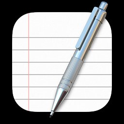
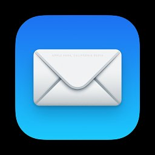
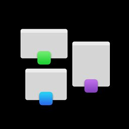

La suite applicative pour une gestion plus facile que jamais
Achats, facture, fournisseurs, devoir de vigilance, saisie des temps… Découvrez le processus design qui a simplifié la manière de gérer l’écosystème de la prestation intellectuelle.

La mission
Sincro connecte les acteurs de la prestation intellectuelle au sein de sa plateforme Saas de gestion et d’intermédiation, leur offrant les outils et les services pour collaborer ensemble dans un cadre sécurisé et interconnecté.
Dans un marché ultra concurrentiel des ERP, Sincro s’est fixé l’objectif d’être la plateforme Saas all-in-one permettant à tous ses utilisateurs de booster et simplifier leur activité au quotidien. Dans ce contexte le challenge principal a été de redesigner et concevoir une suite de produits au service des différents métiers.
Unifier les solutions par une expérience unique
Créer l’image & le Branding
Construire un design system scalable
Repenser et créer les features métier
Mon rôle
En tant que tout premier employé comme Designer UX/UI chez Sincro, j'ai eu le privilège de mener à bien diverses missions majeures pour le développement de la start-up. Mon parcours a débuté par la recherche utilisateur, s'est poursuivi avec la conception du produit, et a impliqué une évolution significative de l'expérience utilisateur en introduisant des fonctionnalités clés, pour finalement déboucher sur une refonte totale de l'interface utilisateur (UI). Au cours de cette enrichissante expérience, j'ai également eu l'occasion de jouer un rôle essentiel dans la création de l'identité visuelle de la marque Sincro, dont nous sommes aujourd'hui extrêmement fiers. Par ailleurs, j'ai étroitement collaboré avec les équipes techniques, marketing et commerciales, sensibilisant ces dernières aux enjeux de l'expérience utilisateur tout en apportant mon soutien grâce à mes compétences en design. En conclusion, cette expérience m'a offert l'opportunité de travailler au sein d'une équipe exceptionnelle, notamment en compagnie du cofondateur aux multiples casquettes, assumant les rôles de CTO, Product Manager et Commercial, Damien Mordaque, ainsi qu'avec le fondateur Lionel Frizon, et toutes les équipes de développement et métier, composées d'une vingtaine de personnes.
Tâches principales
- Design stratégique : Business x Produit
- UX Researcher : Interview, Persona, Expérience Map, Card sorting…
- Brand Designer : Branding
- UX Designer : Userflow, Wireframing, A/B testing
- UI Designer : Conception des interfaces finales, Design System
Tâches secondaires
- Motion Designer : Animations
- Graphic Designer : Communication et slides deck
- Design évangéliste : Animation d’ateliers & partage de connaissances
Design & Research Tool kit

Board
Survey
Card sortingMazePlanning
Nous avons le plus souvent travaillé dans un format agile en sprints de 3 semaines. Ci-dessous un exemple du déroulement de l’un de nos sprints Design.

Deck de recherche
Experience Map
Pour chaque refonte partielle du produit et chaque nouvelle fonctionnalité, nous avons organisé plusieurs ateliers dans le but d'approfondir notre compréhension des attentes et des comportements des utilisateurs. Que ce soit en créant des expérience maps, en menant des entretiens individuels, en organisant des sessions de tri de cartes ou en utilisant la méthode du "6 to 1", ces approches et méthodologies nous ont permis d'acquérir une meilleure compréhension de nos utilisateurs ainsi que leurs attentes dans leur domaine métier.
Voici un exemple d'atelier de création d'une expérience map que nous avons réalisé en collaboration avec un panel de 10 utilisateurs lors d’un atelier réalisé en amont de la refonte du produit Sourcing.

Site Map
D’autre part, j’ai aussi matérialisé le site map de l’ensemble de la solution pour le partager avec toute l’équipe produit. Cela nous a permis, pour chaque nouvelle fonctionnalité, de définir une représentation hiérarchique des pages et des fonctionnalités afin d'optimiser l'expérience utilisateur. Cet exercice garantit une organisation logique, une meilleure accessibilité et une compréhension rapide de la structure qui de fait contribue à accroître in fine la satisfaction et l’expérience des utilisateurs et à favoriser leur rétention sur la plateforme.

La solution
Dashboard
Le tableau de bord personnalisable fournit à tous les utilisateurs une vue globale de leur activité grâce à l'intégration de widgets interactifs. Les widgets permettent de remonter en prime les informations essentielles dont l’utilisateur doit disposer pour réaliser son métier au quotidien. Couplé à un centre de notifications et à un moteur de recherche, cela guide et facilite la prise d’action de l’utilisateur et rend l'expérience encore plus fluide.

Liste des contrats
Dans le module de gestion, vous trouverez une liste de contrats de vente. Cette liste est hautement personnalisable, ce qui permet aux utilisateurs d'avoir une vue d'ensemble, de manipuler et de réaliser des actions individuelles ou groupées en fonction du besoin.

Marketplace
Booster l’activité c’est permettre de favoriser la croissance de l'activité grâce à la capacité qu’offre la solution aux clients afin de mettre en relation des talents avec l'ensemble de son réseau. La Marketplace Sincro est un espace de centralisation des besoins auxquels chaque entreprise membre a l'opportunité de répondre en proposant des ressources ultra qualifiées.

Design system
J'ai dirigé de manière transversale la conception et la mise à jour continue du Design System Sincro. Cette source de documentation a permis à l’ensemble de nos équipes produits et techniques d’améliorer considérablement la vélocité de notre delivery.

Prototype
Retrouvez le prototype sur Figma. Pour des raisons de confidentialité le prototype n’est pas accessible pour le moment.
Remerciements
Merci à l’équipe Sincro
 Damien Mordaque
Damien Mordaque Kevin Mouzet
Kevin Mouzet Emile Leenhardt
Emile Leenhardt